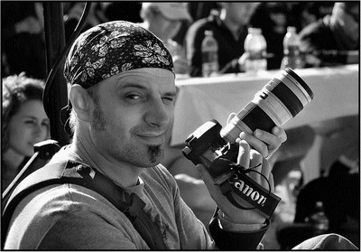
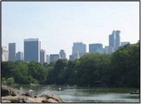
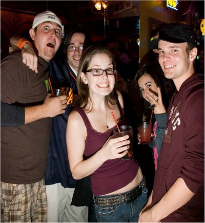
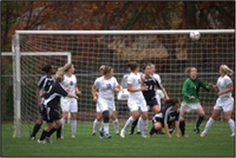

Synthesis
03 Personas
After conducting research we realized that we needed two personas to help us fully focus our design.
Persona 1: Justin Branch
Justin Branch is a 21-year-old college senior at Columbia University in Manhatten. He is a psychology major. He is originally from California and calls himself a surfer at heart.
He loves photography. He discovered his passion for photography his first year at school. It was fall and all the leaves on the trees starting to turn these amazing colors, unlike anything he had seen on the west coast. Now, he takes pictures of all sorts of things, nature, life in the big city, going out with friends.
He takes pride in hearing his friends appreciate and comment on his pictures. He likes the way it makes him feel when people tell him how excited they feel that he has captured those awesome college moments.


Life Goals
Justin's life goals are to grow and foster his friendships by remembering fun experiences they've had together. He imagines one day recounting his bachelor days to his grandchildren and would like to have good collections of pictures to help preserve his memories.
End Goals
Justin's end goals are:
- to share his pictures with his friends
- to be able to revisit his pictures to remember events
- to feel appreciated by his friends for his efforts
Persona 2: Renée Aldridge
Renée Aldridge is also a 21-year-old college senior at Columbia University. She is a psychology major and plays for the college soccer team.
Her parents recently gave her a new camera for her twenty-first birthday but she only uses it occasionally. She feels that taking pictures takes her out of the moment. She usually just hands over her camera to a friend to take pictures.
Renée loves looking at pictures of events and she is so glad that she has friends who do take pictures, like Justin Branch. She also loves commenting on pictures on Facebook, especially to highlight funny moments.
She would like to have a place where she add her pictures when she does take them and also augment her own collection with others’ pictures. She does want to have a good collection of events and random pix from her college experience, like her team matches, going out with friend and such.


Life Goals
Renée's life goals are to keep in touch with her friends and foster a feeling of group cohesion and identity.
End Goals
Renée's end goals are:
- to have a collection of shared memories with her friends
- to be able to document stories that have happened
- to comment on pictures